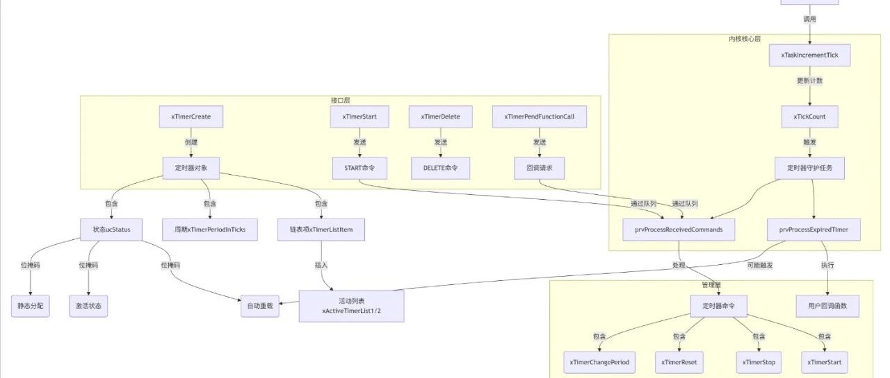

freertos之timer模块
timer不仅仅是一个简单的计时器，而从系统架构层面解决了资源管理和任务调度实时性的核心问题。本文将深入解析 FreeRTOS 定时器模块的核心机制，包括定时器的创建、启动、到期处理以及任务调度逻辑，并探讨其如何通过队列通信和链表管理实现高效、可靠的定时功能。通过分析关键函数（如定时器创建（xTimerCreate）、命令处理（xTimerGenericCommand）、到期回调（prvProcessExpiredTimer）等核心逻辑，并分析自动重载、Tick 溢出处理等）的交互流程，揭示软件定时器在实时系统中的设计与实现细节，为开发者优化定时任务提供理论依据和实践指导。
全文目录
一、定时器模块（timer）的作用
将有限的硬件定时器资源转化为无限可编程的软件定时器
根据需求实现更多定时器功能
安全的控制软件和硬件的交流（重点）
硬件中断层
内核调度层
应用任务层
二、定时器功能的具体实现
xTimerCreate() 定时器创建
动态与静态创建
Timer_t 结构体解析
prvInitialiseNewTimer 初始化定时器
成员初始化逻辑
链表项（xTimerListItem）的初始化
定时器服务任务 xTimerCreateTimerTask()
任务创建与优先级设置
基础设施初始化（队列与链表）
xTimerGenericCommand() 定时器服务任务控制任务
命令消息结构（DaemonTaskMessage_t）
任务与中断上下文的命令发送
用户api参数解析（xCommandID、xOptionalValue 等）
vTimerSetReloadMode() 定时器重载模式设置
自动重载（Auto-Reload）与单次模式（One-Shot）
prvProcessExpiredTimer 到期定时器处理
链表移除与回调执行
自动重载定时器的重新插入逻辑
xTaskIncrementTick()中检测Tick计数，触发任务切换。并且通过taskSWITCH_DELAYED_LISTS机制处理延迟任务。以此实现硬件中断到用户层面的转变。prvTimerTask守护任务处理具体定时器，在任务上下文中安全执行用户回调以实现具体的业务。举个例子，假设一个10ms周期定时器的生命周期：
- 硬件层
SysTick每1ms触发中断，计数器 xTickCount从0递增到10 - 内核层
在 xTaskIncrementTick()中发现xTickCount%10==0，唤醒定时器任务 - 应用层
prvTimerTask从阻塞态进入就绪态 调度器执行任务切换 守护任务调用 prvProcessExpiredTimer()执行用户回调

xTimerCreate()xTimerCreateStatic() | |||
xTimerStart()xTimerStop() | FromISR后缀） | ||
xTimerReset() | FromISR后缀） | ||
xTimerChangePeriod() | FromISR后缀） | ||
xTimerPendFunctionCall() | FromISR后缀） | ||
pvTimerGetTimerID()vTimerSetTimerID() | |||
xTimerGetPeriod()xTimerGetExpiryTime() |
prvTimerTask() | |||
prvProcessReceivedCommands() | |||
prvProcessExpiredTimer() | |||
prvInsertTimerInActiveList() | |||
prvSwitchTimerLists() | pxCurrentTimerList和pxOverflowTimerList | ||
prvSampleTimeNow() | |||
prvCheckForValidListAndQueue() |
TimerHandle_t xTimerCreate( const char * const pcTimerName, /*lint !e971 Unqualified char types are allowed for strings and single characters only. */const TickType_t xTimerPeriodInTicks,const UBaseType_t uxAutoReload,void * const pvTimerID,TimerCallbackFunction_t pxCallbackFunction ){Timer_t * pxNewTimer;pxNewTimer = ( Timer_t * ) pvPortMalloc( sizeof( Timer_t ) ); /*lint !e9087 !e9079 All values returned by pvPortMalloc() have at least the alignment required by the MCU's stack, and the first member of Timer_t is always a pointer to the timer's mame. */if( pxNewTimer != NULL ){/* Status is thus far zero as the timer is not created statically* and has not been started. The auto-reload bit may get set in* prvInitialiseNewTimer. */pxNewTimer->ucStatus = 0x00;prvInitialiseNewTimer( pcTimerName, xTimerPeriodInTicks, uxAutoReload, pvTimerID, pxCallbackFunction, pxNewTimer );}return pxNewTimer;}
这个函数会创建一个定时器并返回它的句柄。他会malloc一个timer结构体的内存并初始化定时器状态为0表示它尚未启动，然后把这个刚刚malloc的结构体交给prvInitialiseNewTimer（）初始化函数让它完成实际的初始化。
typedef struct tmrTimerControl /* The old naming convention is used to prevent breaking kernel aware debuggers. */{const char * pcTimerName; /*<< Text name. This is not used by the kernel, it is included simply to make debugging easier. */ /*lint !e971 Unqualified char types are allowed for strings and single characters only. */ListItem_t xTimerListItem; /*<< Standard linked list item as used by all kernel features for event management. */TickType_t xTimerPeriodInTicks; /*<< How quickly and often the timer expires. */void * pvTimerID; /*<< An ID to identify the timer. This allows the timer to be identified when the same callback is used for multiple timers. */TimerCallbackFunction_t pxCallbackFunction; /*<< The function that will be called when the timer expires. */UBaseType_t uxTimerNumber; /*<< An ID assigned by trace tools such as FreeRTOS+Trace */uint8_t ucStatus; /*<< Holds bits to say if the timer was statically allocated or not, and if it is active or not. */} xTIMER;
这是一个具体软件定时器的控制块，也是这个软件定时器本身。下面我列出这个结构体内成员及其作用。
| 成员变量 | 数据类型 | 作用 | 备注 |
|---|---|---|---|
pcTimerName | const char* | ||
xTimerListItem | ListItem_t | xItemValue（到期时间戳），通过链表实现定时器的排序和触发管理。 | |
xTimerPeriodInTicks | TickType_t | pdMS_TO_TICKS(1000) 表示 1 秒周期。 | |
pvTimerID | void* | pvTimerGetTimerID() 访问。 | |
pxCallbackFunction | TimerCallbackFunction_t | void (*)(TimerHandle_t xTimer)，在定时器服务任务上下文中执行。 | |
uxTimerNumber | UBaseType_t | configUSE_TRACE_FACILITY == 1 时生效。 | |
ucStatus | uint8_t | 位0 |
static void prvInitialiseNewTimer( const char * const pcTimerName, /*lint !e971 Unqualified char types are allowed for strings and single characters only. */const TickType_t xTimerPeriodInTicks,const UBaseType_t uxAutoReload,void * const pvTimerID,TimerCallbackFunction_t pxCallbackFunction,Timer_t * pxNewTimer ){/* 0 is not a valid value for xTimerPeriodInTicks. */configASSERT( ( xTimerPeriodInTicks > 0 ) );if( pxNewTimer != NULL ){/* Ensure the infrastructure used by the timer service task has been* created/initialised. */prvCheckForValidListAndQueue();/* Initialise the timer structure members using the function* parameters. */pxNewTimer->pcTimerName = pcTimerName;pxNewTimer->xTimerPeriodInTicks = xTimerPeriodInTicks;pxNewTimer->pvTimerID = pvTimerID;pxNewTimer->pxCallbackFunction = pxCallbackFunction;vListInitialiseItem( &( pxNewTimer->xTimerListItem ) );if( uxAutoReload != pdFALSE ){pxNewTimer->ucStatus |= tmrSTATUS_IS_AUTORELOAD;}traceTIMER_CREATE( pxNewTimer );}}/*----
这个函数的意义在于初始化定时器成员，它会先检查参数和句柄，然后再初始化定时器成员。
pcTimerName = pcTimerName;xTimerPeriodInTicks = xTimerPeriodInTicks;pvTimerID = pvTimerID;pxCallbackFunction = pxCallbackFunction;
每一个tmr中都有一个链表项vListInitialiseItem（），这个函数还会初始化这个链表项
vListInitialiseItem( &( pxNewTimer->xTimerListItem ) );将 pxItem->pvOwner 指向包含它的定时器结构体，这使得从链表项可以反向引用到所属的定时器。再将 pxItem->pxNext 和pxItem->pxPrevious 设为指向自身，表示该链表项当前不在任何链表中（独立状态）。将 pxItem->xItemValue 设为 0，这个值稍后会被设置为定时器的到期时间以便按照时间顺序排序。
初始化完成之后，链表项状态如下：
pxNewTimer->xTimerListItem:{xItemValue = 0, // 初始为0，后续会被设置为到期时间pxNext = &pxNewTimer->xTimerListItem, // 指向自身pxPrevious = &pxNewTimer->xTimerListItem, // 指向自身pvOwner = pxNewTimer, // 指向所属的定时器结构体pxContainer = NULL // 未加入任何链表}
3.定时器服务任务xTimerCreateTimerTask（）
BaseType_t xTimerCreateTimerTask( void ){BaseType_t xReturn = pdFAIL;/* This function is called when the scheduler is started if* configUSE_TIMERS is set to 1. Check that the infrastructure used by the* timer service task has been created/initialised. If timers have already* been created then the initialisation will already have been performed. */prvCheckForValidListAndQueue();if( xTimerQueue != NULL ){{StaticTask_t * pxTimerTaskTCBBuffer = NULL;StackType_t * pxTimerTaskStackBuffer = NULL;uint32_t ulTimerTaskStackSize;vApplicationGetTimerTaskMemory( &pxTimerTaskTCBBuffer, &pxTimerTaskStackBuffer, &ulTimerTaskStackSize );xTimerTaskHandle = xTaskCreateStatic( prvTimerTask,configTIMER_SERVICE_TASK_NAME,ulTimerTaskStackSize,NULL,( ( UBaseType_t ) configTIMER_TASK_PRIORITY ) | portPRIVILEGE_BIT,pxTimerTaskStackBuffer,pxTimerTaskTCBBuffer );if( xTimerTaskHandle != NULL ){xReturn = pdPASS;}}{xReturn = xTaskCreate( prvTimerTask,configTIMER_SERVICE_TASK_NAME,configTIMER_TASK_STACK_DEPTH,NULL,( ( UBaseType_t ) configTIMER_TASK_PRIORITY ) | portPRIVILEGE_BIT,&xTimerTaskHandle );}}else{mtCOVERAGE_TEST_MARKER();}configASSERT( xReturn );return xReturn;}
freertos会有一个定时器都服务任务TimerTask用来控制任务，在调度器启动时启动，用来：- 处理定时器的启动、停止、重置等命令
- 检查定时器是否到期
- 执行定时器到期时的回调函数
xTimerCreateTimerTask 是 FreeRTOS 中用于创建定时器服务任务的核心函数，该函数负责初始化定时器服务所需的基础设施，并创建定时器服务任务。具体会执行以下几步：
（1）调用 prvCheckForValidListAndQueue() 确保定时器服务所需的基础设施（链表和队列）已创建/初始化
prvCheckForValidListAndQueue();（2）若是静态创建，通过用户提供的 vApplicationGetTimerTaskMemory 回调函数获取静态内存
vApplicationGetTimerTaskMemory( &pxTimerTaskTCBBuffer, &pxTimerTaskStackBuffer, &ulTimerTaskStackSize );再使用xTaskCreateStatic创建函数，将优先级设置为portPRIVILEGE_BIT特权级（确保及时响应）
（3）若是动态创建，则直接调用xTaskCreate并返回句柄
xReturn = xTaskCreate( prvTimerTask,// 任务函数configTIMER_SERVICE_TASK_NAME,// 任务名称configTIMER_TASK_STACK_DEPTH,// 堆栈深度NULL,// 参数( ( UBaseType_t ) configTIMER_TASK_PRIORITY ) | portPRIVILEGE_BIT,// 优先级&xTimerTaskHandle// 任务句柄指针);
这些参数大多是在设置项中早就设置好的，列个表总结一下：
prvTimerTask | ||
FreeRTOSConfig.h | ||
FreeRTOSConfig.h | ||
NULL | ||
FreeRTOSConfig.h | ||
（4）断言检查句柄并返回。
4.xTimerGenericCommand（）定时器服务任务控制任务
BaseType_t xTimerGenericCommand( TimerHandle_t xTimer,const BaseType_t xCommandID,const TickType_t xOptionalValue,BaseType_t * const pxHigherPriorityTaskWoken,const TickType_t xTicksToWait ){BaseType_t xReturn = pdFAIL;DaemonTaskMessage_t xMessage;configASSERT( xTimer );/* Send a message to the timer service task to perform a particular action* on a particular timer definition. */if( xTimerQueue != NULL ){/* Send a command to the timer service task to start the xTimer timer. */xMessage.xMessageID = xCommandID;xMessage.u.xTimerParameters.xMessageValue = xOptionalValue;xMessage.u.xTimerParameters.pxTimer = xTimer;if( xCommandID < tmrFIRST_FROM_ISR_COMMAND ){if( xTaskGetSchedulerState() == taskSCHEDULER_RUNNING ){xReturn = xQueueSendToBack( xTimerQueue, &xMessage, xTicksToWait );}else{xReturn = xQueueSendToBack( xTimerQueue, &xMessage, tmrNO_DELAY );}}else{xReturn = xQueueSendToBackFromISR( xTimerQueue, &xMessage, pxHigherPriorityTaskWoken );}traceTIMER_COMMAND_SEND( xTimer, xCommandID, xOptionalValue, xReturn );}else{mtCOVERAGE_TEST_MARKER();}return xReturn;}
xTimerGenericCommand 是 FreeRTOS 定时器模块的核心内部函数，用于将命令封装成统一的消息格式向定时器服务任务发送命令
（如启动、停止、重置定时器等）。用户不会直接使用它，但是用户使用的xTimerStart、xTimerStop 等api调用这个函数来控制TimerTask从而控制timer。
前提：xTimerQueue != NULL 定时器系统已经被初始化过。
（1）构造命令结构体（命令消息）
xMessage.xMessageID = xCommandID;xMessage.u.xTimerParameters.xMessageValue = xOptionalValue;xMessage.u.xTimerParameters.pxTimer = xTimer;
DaemonTaskMessage_t包含：
xMessageID：命令类型（如启动、停止）。
xMessageValue：可选参数（如新周期值）。
pxTimer：目标定时器指针。
(2)发送命令到timer队列
分两种情况处理：
情况1：普通任务上下文（非ISR）
if( xCommandID < tmrFIRST_FROM_ISR_COMMAND ){//判断条件：xCommandID取值范围 0到 tmrFIRST_FROM_ISR_COMMAND-1if( xTaskGetSchedulerState() == taskSCHEDULER_RUNNING ){//调度器启动xReturn = xQueueSendToBack( xTimerQueue, &xMessage, xTicksToWait );}else{xReturn = xQueueSendToBack( xTimerQueue, &xMessage, tmrNO_DELAY );}}
调度器运行中：使用 xQueueSendToBack阻塞发送（等待 xTicksToWait）。
调度器未启动：立即发送（tmrNO_DELAY），避免阻塞。
情况2：中断上下文（ISR）
else{xReturn = xQueueSendToBackFromISR( xTimerQueue, &xMessage, pxHigherPriorityTaskWoken );}
使用 xQueueSendToBackFromISR发送，安全用于中断。
pxHigherPriorityTaskWoken用于标记是否需要上下文切换。
(3)返回值pdPASS（成功）或 pdFAIL（失败）。
API 函数 | xTimer (句柄) | xCommandID (命令) | xOptionalValue (可选值) | pxHigherPriorityTaskWoken (ISR标记) | xTicksToWait (阻塞时间) |
|---|---|---|---|---|---|
| ✔ |
|
|
| ✔ |
| ✔ |
|
|
| ✔ |
| ✔ |
|
|
| ✔ |
| ✔ |
|
|
| ✔ |
| ✔ |
|
|
| ✔ |
| ✔ |
|
| ✔ (指向 |
|
| ✔ |
|
| ✔ (指向 |
|
| ✔ |
|
| ✔ (指向 |
|
xTimerCreate()创建。创建好的timer会包含链表节点，周期函数和许多标识符，是最终被使用的对象，包含在message里面发送出去。xTimerGenericCommand内部，xOptionalValue会被封装到消息结构体中，通过队列发送给定时器服务任务。任务解析命令后，根据 xCommandID决定如何使用 xOptionalValue。每个任务的参数需求是固定的：API 函数 | 对应的 |
| 示例值 |
|---|---|---|---|
|
| 记录定时器启动时刻的系统 tick 值（用于计算到期时间） |
|
|
| 记录定时器重置时刻的系统 tick 值（重新计算到期时间） |
|
|
| 记录 ISR 中启动时刻的系统 tick 值（通过 |
|
|
| 记录 ISR 中重置时刻的系统 tick 值（通过 |
|
|
| 传入新的定时周期（单位：tick），用于动态调整定时器间隔 |
|
|
| 未使用（固定值 |
|
|
| 未使用（固定值 |
|
|
| 未使用（固定值 |
|
xTimerStartFromISR）从阻塞态进入就绪态，且其优先级 高于被中断的任务。如果是，则需手动触发任务切换。FreeRTOS 的定时器服务任务通常处于 阻塞状态，等待命令队列的消息。当 ISR （禁止阻塞）向队列发送命令（如启动/停止定时器）时，可能唤醒该任务。
如果被唤醒的任务优先级 高于当前被中断的任务，且 ISR 直接退出，则高优先级任务无法立即执行（因为 ISR 退出后默认返回被中断的任务）。
void vKeyPressISR() {BaseType_t xHigherPriorityTaskWoken = pdFALSE;// 在 ISR 中启动定时器if (xTimerStartFromISR(xTimer, &xHigherPriorityTaskWoken) != pdPASS) {// 处理错误}// 检查是否需要切换任务if (xHigherPriorityTaskWoken == pdTRUE) {portYIELD_FROM_ISR(); // 触发任务切换}}
xReturn = xQueueSendToBack( xTimerQueue, &xMessage, xTicksToWait );void vTimerSetReloadMode( TimerHandle_t xTimer,const UBaseType_t uxAutoReload ){Timer_t * pxTimer = xTimer;configASSERT( xTimer );taskENTER_CRITICAL();{if( uxAutoReload != pdFALSE ){pxTimer->ucStatus |= tmrSTATUS_IS_AUTORELOAD;}else{pxTimer->ucStatus &= ~tmrSTATUS_IS_AUTORELOAD;}}taskEXIT_CRITICAL();}
定时器有两种模式：重载/单次
模式 | 行为特点 | 典型应用场景 |
|---|---|---|
自动重载模式 | 定时器到期后自动重新加载周期值，周期性触发 | 心跳检测、周期性数据采集、LED闪烁 |
单次模式 | 定时器到期后自动停止，仅触发一次 | 延时操作、超时控制、一次性事件z |
这个函数可以通过传入pdTRUE/pdFALSE来控制是否重载
（通过设置
pxTimer->ucStatus |= tmrSTATUS_IS_AUTORELOAD/
pxTimer->ucStatus &= ~tmrSTATUS_IS_AUTORELOAD来控制）。
6.prvProcessExpiredTimer到期定时器处理
static void prvProcessExpiredTimer( const TickType_t xNextExpireTime,const TickType_t xTimeNow ){BaseType_t xResult;Timer_t * const pxTimer = ( Timer_t * ) listGET_OWNER_OF_HEAD_ENTRY( pxCurrentTimerList ); /*lint !e9087 !e9079 void * is used as this macro is used with tasks and co-routines too. Alignment is known to be fine as the type of the pointer stored and retrieved is the same. *//* Remove the timer from the list of active timers. A check has already* been performed to ensure the list is not empty. */( void ) uxListRemove( &( pxTimer->xTimerListItem ) );traceTIMER_EXPIRED( pxTimer );/* If the timer is an auto-reload timer then calculate the next* expiry time and re-insert the timer in the list of active timers. */if( ( pxTimer->ucStatus & tmrSTATUS_IS_AUTORELOAD ) != 0 ){/* The timer is inserted into a list using a time relative to anything* other than the current time. It will therefore be inserted into the* correct list relative to the time this task thinks it is now. */if( prvInsertTimerInActiveList( pxTimer, ( xNextExpireTime + pxTimer->xTimerPeriodInTicks ), xTimeNow, xNextExpireTime ) != pdFALSE ){/* The timer expired before it was added to the active timer* list. Reload it now. */xResult = xTimerGenericCommand( pxTimer, tmrCOMMAND_START_DONT_TRACE, xNextExpireTime, NULL, tmrNO_DELAY );configASSERT( xResult );( void ) xResult;}else{mtCOVERAGE_TEST_MARKER();}}else{pxTimer->ucStatus &= ~tmrSTATUS_IS_ACTIVE;mtCOVERAGE_TEST_MARKER();}/* Call the timer callback. */pxTimer->pxCallbackFunction( ( TimerHandle_t ) pxTimer );
上文中的几个函数主要功能是创建timer（task）并且将它们装入队列。看过我之前Queue文章的人肯定都知道这些timer的链表项会按照优先度也就是时间被调用，这个函数的作用就是处理到期启动的timer，包括执行回调函数、处理自动重载（Auto-Reload）逻辑等。
PrvTimerTask（）会检查链表头的timer是否到期，如果到期，就会调用这个prvProcessExpiredTimer()函数来处理这个到期的定时器。处理分几步：
(1)获取当前到期的定时器
Timer_t * const pxTimer = (Timer_t *) listGET_OWNER_OF_HEAD_ENTRY(pxCurrentTimerList);从 pxCurrentTimerList（当前活动定时器链表,升序排列）的头部获取到期的定时器
(2)从链表中移除计时器
(void) uxListRemove(&(pxTimer->xTimerListItem));traceTIMER_EXPIRED(pxTimer);
定时器到期后，必须先从链表中移除，避免重复触发。
uxListRemove：将定时器从活动链表中移除（因为它已经到期）。traceTIMER_EXPIRED：如果启用了追踪功能（configUSE_TRACE_FACILITY），记录定时器到期事件。
(3)处理自动重载（Auto-Reload）定时器
if((pxTimer->ucStatus & tmrSTATUS_IS_AUTORELOAD) != 0)前面讲过重载定时器flag：tmrSTATUS_IS_AUTORELOAD
检查定时器是否是自动重载定时器（
ucStatus的tmrSTATUS_IS_AUTORELOAD标志位是否置位）。自动重载定时器：到期后会自动重新启动（类似硬件定时器的周期性模式）。
(4)若重载，则重新插入
if (prvInsertTimerInActiveList(pxTimer,(xNextExpireTime + pxTimer->xTimerPeriodInTicks), // 下一次到期时间 = 当前到期时间 + 周期xTimeNow,xNextExpireTime) != pdFALSE)
计算下一次到期时间：xNextExpireTime + pxTimer->xTimerPeriodInTicks。
调用 prvInsertTimerInActiveList尝试将定时器重新插入活动链表。
(5)如果插入前就到期，则重新启动定时器
(6)处理单次定时器
else{ pxTimer->ucStatus &= ~tmrSTATUS_IS_ACTIVE; // 清除“活跃”标志位mtCOVERAGE_TEST_MARKER();}
如果是单次定时器（非自动重载），则清除其 tmrSTATUS_IS_ACTIVE标志位，表示定时器已停止。
(7)执行定时器指向的回调函数
pxCallbackFunction((TimerHandle_t)pxTimer);调用定时器的回调函数，执行用户定义的逻辑。
回调函数的参数是定时器句柄 (TimerHandle_t)pxTimer。
回调函数在定时器服务任务的上下文中执行，因此不能执行阻塞操作（如 vTaskDelay）。
应尽量保持简短，避免影响其他定时器的调度。


流程说明
用户调用API（如
xTimerStart/Stop）→ 通过xTimerGenericCommand发送命令到队列。定时器服务任务 (
prvTimerTask)：从队列读取命令 →
prvProcessReceivedCommands。检查到期定时器 →
prvProcessExpiredTimer→ 执行回调。回调执行：在服务任务上下文中运行，不可阻塞。
核心交互
用户层：仅调用API，不直接操作定时器。
内核层：通过队列和链表隔离硬件与业务逻辑。
关键函数：
prvTimerTask是中枢，协调命令处理和定时触发。